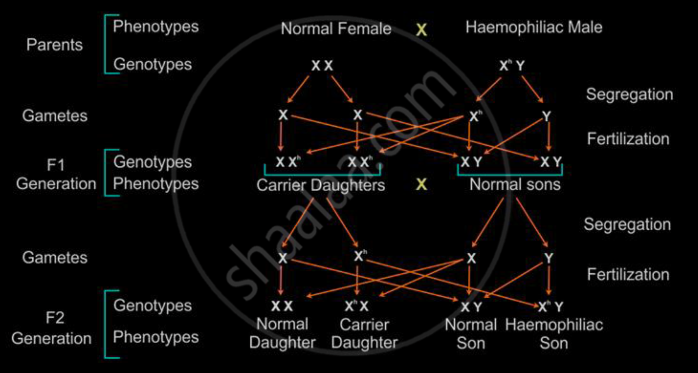

What are Genetic Disorders?
- Genetic disorders are diseases or conditions caused by changes (mutations) in DNA.
- These mutations can be:
- In one gene (single-gene disorder)
- In multiple genes
- Or due to chromosome abnormalities
Types of Inheritance
üî¨ By Chromosome Location
| Type |
Carried on |
Affects Who? |
| Autosomal |
Chromosomes 1–22 |
Both sexes equally |
| Sex-linked |
X or Y chromosomes |
Often affects males more (especially X-linked) |
⚖️ By Dominance
| Type |
Trait Appears If... |
| Dominant |
One copy of the faulty gene |
| Recessive |
Two copies of the faulty gene |
Key Examples: How Genetic Disorders Are Inherited
Thalassemia
- Type: Autosomal recessive
- Carried on: Chromosome 11 or 16
- How inherited: A child needs two faulty copies (one from each parent) to have the disorder.
- Carriers (only one faulty gene) are usually healthy but can pass it on.
Haemophilia
- Type: X-linked recessive
- Carried on: The X chromosome
- How inherited:
- Males (XY): Only one faulty X causes the disorder (no backup X)
- Females (XX): Need two faulty Xs to show symptoms (rare); carriers have one faulty X and are usually unaffected.

Other Common Genetic Disorders
| Disorder |
Type |
Chromosomal Location |
Symptoms |
| Sickle Cell Anemia |
Autosomal recessive |
Chromosome 11 |
Red blood cells become sickle-shaped |
| Huntington’s |
Autosomal dominant |
Chromosome 4 |
Brain degeneration in adulthood |
| Color Blindness |
X-linked recessive |
X chromosome |
Can’t distinguish certain colors |
| Cystic Fibrosis |
Autosomal recessive |
Chromosome 7 |
Thick mucus in lungs, breathing issues |
Key Vocabulary
- Mutation: A change in DNA that can cause a disorder
- Carrier: A person with one faulty gene who does not show symptoms (in recessive disorders)
- Chromosomes: Structures made of DNA; humans have 23 pairs
- 22 pairs of autosomes
- 1 pair of sex chromosomes (XX or XY)
Written by Kasiban Parthipan